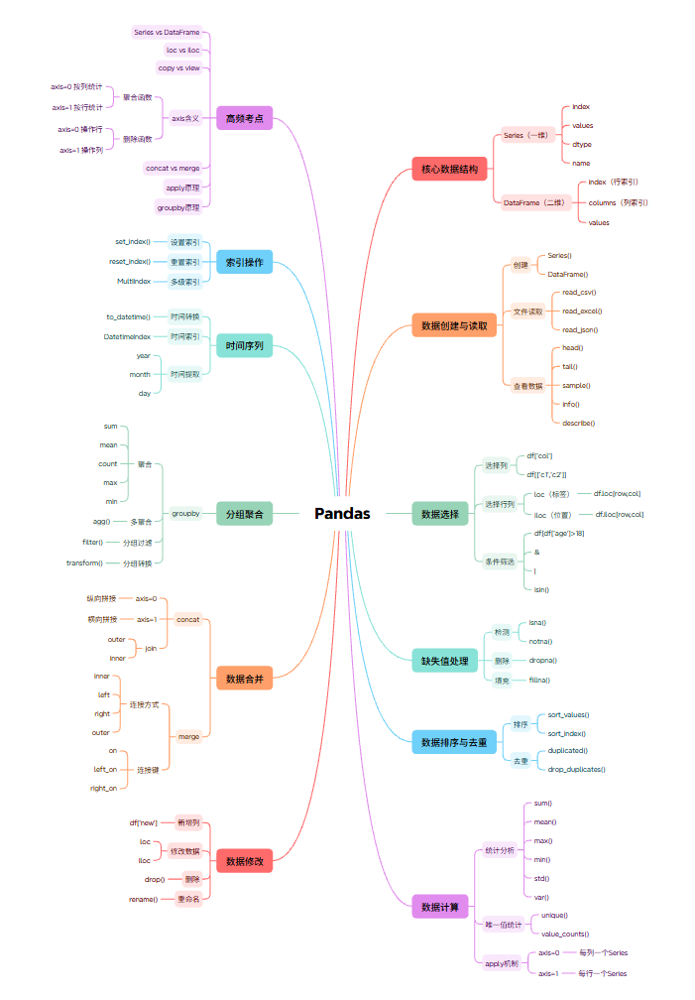

Pandas - 数据处理与分析

一、简介
Pandas 是基于 NumPy 构建的 Python 数据分析库，提供了 Series（一维）和 DataFrame（二维）两种核心数据结构。它兼具 NumPy 高性能数组计算能力以及电子表格和关系数据库（如 SQL）灵活的数据处理功能。
命名由来
Pandas 这个名字源于 Panel Data（面板数据，计量经济学中多维结构化数据集的术语）和 Python Data Analysis（Python 数据分析）。
1.1 安装
pip install pandas
# 可选依赖
pip install openpyxl # Excel 支持
pip install missingno # 缺失值可视化
pip install pyarrow # Feather/Parquet 支持
1.2 导入约定
1.3 Pandas 与 Python 类型对照
| Pandas 类型 | Python 类型 | 说明 |
|---|---|---|
object |
string |
字符串类型 |
int64 |
int |
整型 |
float64 |
float |
浮点型 |
datetime64[ns] |
datetime |
日期时间类型 |
bool |
bool |
布尔类型 |
category |
— | 分类类型 |
二、核心数据结构
2.1 Series（一维）
Series 是一个一维的标签化数组对象，可以存储任何数据类型，并通过标签（索引）访问元素。
创建 Series
# 指定 series 的名称，可以通过 s.name 获取
s = pd.Series([4, 7, -5, 3], index=['a', 'b', 'c', 'd'], name='my_series')
# 先创建，然后通过 index 选择特定的元素。
s = pd.Series({'a': 4, 'b': 7, 'c': -5, 'd': 3}, index=['a', 'c'], name='filtered')
常用属性
| 属性 | 说明 |
|---|---|
s.index |
索引对象 |
s.values |
值数组（NumPy 数组） |
s.dtype / s.dtypes |
元素类型 |
s.ndim |
维度（Series 为 1） |
s.shape |
形状 |
s.size |
元素个数 |
s.name |
Series 的名称 |
索引与访问
| 方法 | 说明 |
|---|---|
s.loc['a'] |
显式索引，按标签索引 |
s.loc['a':'c'] |
显式切片（包含结束标签） |
s.iloc[0] |
隐式索引，按位置索引 |
s.iloc[0:3] |
隐式切片（不包含结束位置） |
s.at['a'] |
使用标签访问单个元素（比 loc 快） |
s.iat[3] |
使用位置访问单个元素（比 iloc 快） |
s = pd.Series([11, 22, 33, 44, 55], index=['a', 'b', 'c', 'd', 'e'])
s.loc['c'] # 33
s.loc['b':'d'] # b 22, c 33, d 44（注意包含结束标签）
s.iloc[0] # 11
s.iloc[0:3] # 11, 22, 33
s.at['a'] # 11（快速访问）
s.iat[3] # 44（快速访问）
常用方法
| 方法 | 说明 |
|---|---|
s.head(n) |
查看前 n 行（默认 5） |
s.tail(n) |
查看后 n 行（默认 5） |
s.describe() |
常见统计信息 |
s.value_counts() |
每个元素的频数统计 |
s.count() |
非缺失值元素个数 |
s.isin([1,2]) |
元素是否在参数集合中 |
s.isna() / s.isnull() |
是否为缺失值 |
s.unique() |
去重后的数组（返回 NumPy 数组） |
s.nunique() |
去重后非缺失值元素个数 |
s.drop_duplicates() |
去重 |
s.sample() |
随机采样 |
s.replace(22, 'haha') |
用指定值替代 |
s.sort_index() |
按索引排序 |
s.sort_values() |
按值排序 |
s.to_frame() |
转换为 DataFrame |
s.equals(other) |
判断两个 Series 是否相同 |
s.keys() |
返回索引对象 |
s.items() |
获取（索引，值）对 |
统计方法
s.sum() # 求和
s.mean() # 平均值
s.min() # 最小值
s.max() # 最大值
s.var() # 方差
s.std() # 标准差
s.median() # 中位数
s.mode() # 众数（可能返回多个值）
s.quantile(0.5) # 指定位置的分位数
quantile() 插值方法
quantile(q, interpolation='linear') 的 interpolation 参数控制分位数位置不在数据点上时的插值方式，可选 'linear'（线性插值，默认）、'lower'、'higher'、'midpoint'、'nearest'。
相关性分析
s1 = pd.Series([1, 2, 3])
s2 = pd.Series([3, 2, 1])
s1.corr(s2) # 相关系数（默认皮尔逊），结果 = -1（完全负相关）
s1.cov(s2) # 协方差
布尔索引
s = pd.Series({'a': -1.2, 'b': 3.5, 'c': 6.8, 'd': 2.9})
bools = s > s.mean() # 大于平均值的标记为 True
s[bools]
# b 3.5
# c 6.8
运算规则
s1 = pd.Series([1, 1, 1, 1])
s2 = pd.Series([2, 2, 2, 2], index=[1, 2, 3, 4])
s1 + s2
# 0 NaN ← 索引 0 在 s2 中没有
# 1 3.0
# 2 3.0
# 3 3.0
# 4 NaN ← 索引 4 在 s1 中没有
自动对齐
Series 之间的运算是按标签索引自动对齐的，没有匹配上的索引会用 NaN 填充。
2.2 DataFrame（二维）
DataFrame 是一个表格型的数据结构，含有一组有序的列，每列可以是不同的值类型（数值、字符串、布尔值），既有行索引也有列索引。
创建 DataFrame
# 通过字典创建，字典的键是列名，值是列数据
df = pd.DataFrame({
'id': [101, 102, 103],
'name': ['张三', '李四', '王五'],
'age': [20, 30, 40]
})
# 通过字典创建，并指定列顺序和行索引
df = pd.DataFrame(
data={'age': [20, 30, 40], 'name': ['张三', '李四', '王五']},
columns=['name', 'age'], # 指定列顺序
index=[101, 102, 103] # 自定义行索引
)
# 通过嵌套列表创建，columns 参数指定列名
df = pd.DataFrame([
['Alice', 25, 'Beijing'],
['Bob', 30, 'Shanghai']
], columns=['name', 'age', 'city'])
常用属性
| 属性 | 说明 |
|---|---|
df.index |
行索引 |
df.columns |
列标签 |
df.values |
值数组（NumPy 二维数组） |
df.dtypes |
各列数据类型 |
df.ndim |
维度（DataFrame 为 2） |
df.shape |
形状（行数，列数） |
df.size |
元素总数 |
df.T |
行列转置 |
df.empty |
是否为空 |
索引与访问
| 方法 | 说明 |
|---|---|
df.loc['a'] |
按行标签索引 |
df.loc['a':'c', 'name'] |
按行列标签切片 |
df.loc[:, ['name', 'age']] |
所有行，指定列 |
df.iloc[0] |
按行位置索引 |
df.iloc[0:3, 0:2] |
按行列位置切片 |
df.at['a', 'name'] |
按行列标签快速访问单个元素 |
df.iat[0, 1] |
按行列位置快速访问单个元素 |
df = pd.DataFrame(
{'id': [101, 102, 103], 'name': ['张三', '李四', '王五'], 'age': [20, 30, 40]},
index=['a', 'b', 'c']
)
df.loc['a':'b'] # 前两行（包含结束标签）
df.loc[:, ['id', 'name']] # 所有行的 id 和 name 列
df.iloc[0:2, :] # 前两行所有列
df.iloc[0:3, 2] # 前三行的第 3 列（age）
df.at['a', 'name'] # '张三'
df.iat[0, 1] # '张三'
常用方法
| 方法 | 说明 |
|---|---|
df.head(n) |
查看前 n 行（默认 5） |
df.tail(n) |
查看后 n 行（默认 5） |
df.describe() |
常见统计信息 |
df.info() |
基本信息（列名、非空数、类型） |
df.isin([1,2]) |
元素是否在参数集合中 |
df.isna() / df.isnull() |
是否为缺失值 |
df.count() |
每列非空元素个数 |
df.value_counts() |
每行唯一组合的频数 |
df.drop_duplicates() |
去重 |
df.sample() |
随机采样 |
df.replace(20, 'haha') |
用指定值替代 |
df.equals(other) |
判断两个 DataFrame 是否相同 |
df.nlargest(n, 'col') |
返回某列最大的 n 行 |
df.nsmallest(n, 'col') |
返回某列最小的 n 行 |
累积与差分
df = pd.DataFrame({'A': [2, 5, 3, 7, 4], 'B': [1, 6, 2, 8, 3]})
df.cummax(axis='index') # 按列方向累计最大值
df.cummax(axis='columns') # 按行方向累计最大值
df.cummin() # 累计最小值
df.cumsum() # 累计和
df.cumprod() # 累计积
df.diff() # 一阶差分（当前值 - 前一个值）
DataFrame 的更改操作
df = pd.DataFrame({'age': [20, 30, 40], 'name': ['张三', '李四', '王五'], 'id': [101, 102, 103]})
df.set_index('id', inplace=True) # 将 id 列设为行索引
df.reset_index(inplace=True) # 重置为默认索引
df = pd.DataFrame({'age': [20, 30], 'name': ['张三', '李四']})
# rename 方法
df.rename(index={0: 'a', 1: 'b'}, columns={'age': '年龄', 'name': '姓名'}, inplace=True)
# 直接覆盖
df.index = ['Ⅰ', 'Ⅱ']
df.columns = ['年齡', '名稱']
# 添加列
df['phone'] = ['13333333333', '14444444444']
# 删除列
df.drop('phone', axis=1, inplace=True)
del df['phone']
# 插入列（指定位置）
df.insert(loc=0, column='phone', value=['133', '144'])
布尔索引
df = pd.DataFrame(
{'age': [20, 30, 40, 10], 'name': ['张三', '李四', '王五', '赵六']},
index=[101, 104, 103, 102]
)
df[df['age'] > 25]
# name age
# 104 李四 30
# 103 王五 40
DataFrame 运算规则
df = pd.DataFrame({'age': [20, 30, 40], 'name': ['张三', '李四', '王五']})
df * 2
# name age
# 0 张三张三 40
# 1 李四李四 60
# 2 王五王五 80
# 注意：字符串也会被重复
df1 = pd.DataFrame({'age': [10, 20, 30], 'name': ['张三', '李四', '王五']}, index=[1, 2, 3])
df2 = pd.DataFrame({'age': [10, 20, 30], 'name': ['张三', '李四', '田七']}, index=[2, 3, 4])
df1 + df2
# name age
# 1 NaN NaN ← 索引 1 只在 df1
# 2 张三李四 30.0
# 3 王五李四 50.0
# 4 NaN NaN ← 索引 4 只在 df2
# 注意：字符串拼接，缺失 NaN
自动对齐
DataFrame 运算同样按标签索引自动对齐，对齐不上的位置用 NaN 填充。
三、数据读取与写入
3.1 读取数据
df = pd.read_csv('data.csv')
df = pd.read_csv('data.csv', encoding='utf-8')
df = pd.read_csv('data.csv', sep='\t') # TSV
df = pd.read_csv('data.csv', header=None) # 无表头
df = pd.read_csv('data.csv', nrows=100) # 只读前 100 行
df = pd.read_csv('data.csv', index_col='id') # 指定行索引列
df = pd.read_csv('data.csv', parse_dates=['date']) # 自动解析日期
df = pd.read_json('data.json')
df = pd.read_json('data.json', orient='records')
df = pd.read_html('https://example.com/table.html') # HTML 表格（返回 list）
df = pd.read_parquet('data.parquet')
df = pd.read_feather('data.feather')
df = pd.read_pickle('data.pkl')
import sqlite3
conn = sqlite3.connect('database.db')
df = pd.read_sql('SELECT * FROM table', conn)
3.2 写入数据
df.to_csv('output.csv', index=False)
df.to_csv('output.csv', encoding='utf-8-sig') # Excel 兼容中文
df.to_csv('output.tsv', sep='\t') # 自定义分隔符
df.to_excel('output.xlsx', index=False)
# 多个 sheet
with pd.ExcelWriter('output.xlsx') as writer:
df1.to_excel(writer, sheet_name='Sheet1')
df2.to_excel(writer, sheet_name='Sheet2')
df.to_json('output.json', orient='records', force_ascii=False)
df.to_pickle('data.pkl') # Python 专用序列化
df.to_clipboard() # 保存到剪贴板
df.to_dict() # 转换为字典
df.to_hdf('data.h5', key='df') # HDF5 格式
df.to_html('data.html') # HTML 格式
df.to_feather('data.feather') # Feather 格式（跨语言）
# 写入数据库
df.to_sql('table_name', conn, if_exists='replace', index=False)
四、数据选择与过滤
4.1 选择列
# 单列（返回 Series）
df['name']
df.name # 简写（列名需为有效标识符）
# 多列（返回 DataFrame）
df[['name', 'age']]
# 选择特定类型列
df.select_dtypes(include='number')
df.select_dtypes(exclude='object')
4.2 选择行
df.loc[0] # 第一行
df.loc[0:2] # 前 3 行（loc 包含结束位置）
df.loc[0, 'name'] # 特定单元格
df.loc[0:2, ['name', 'age']] # 特定行列
df[df['age'] > 25]
df[(df['age'] > 25) & (df['city'] == 'Beijing')]
df[df['name'].isin(['Alice', 'Bob'])]
# query 语法（更简洁）
df.query('age > 25')
df.query('age > 25 and city == "Beijing"')
loc vs iloc 切片行为
df.loc[0:2] 包含结束标签 2；df.iloc[0:2] 不包含结束位置 2（标准 Python 切片行为）。
4.3 索引操作
# 设置索引
df.set_index('id', inplace=True)
# 重置索引
df.reset_index(inplace=True)
df.reset_index(drop=True) # 丢弃原索引，不添加为新列
# 修改索引名
df.index.name = 'idx'
# 修改列名
df.rename(columns={'old': 'new'}, inplace=True)
df.columns = ['col1', 'col2', 'col3']
五、数据清洗
5.1 缺失值处理
缺失值类型
Pandas 中的缺失值有三种表示方式：
import numpy as np
s = pd.Series([1, np.nan, None, pd.NA])
# 0 1
# 1 NaN
# 2 None
# 3 <NA>
s.isnull().all() # True，它们都被视为缺失值
| 类型 | 说明 |
|---|---|
np.nan |
NumPy 浮点 NaN，任何值与自身比较都为 False |
None |
Python 空对象，会被自动转换为 np.nan |
pd.NA |
Pandas 内置缺失值标记，语义更丰富 |
加载数据时处理缺失值
# keep_default_na：默认将空白值视为 NaN
df = pd.read_csv('data.csv', keep_default_na=False)
# na_values：将指定值视为缺失值
df = pd.read_csv('data.csv', na_values=['N/A', 'NULL', 'Unknown'])
检查缺失值
df.isnull().sum() # 每列缺失数量
df.isnull().any() # 每列是否有缺失
df.isnull().sum().sum() # 总缺失数量
# missingno 可视化缺失值（需安装）
import missingno as msno
msno.bar(df) # 条形图展示每列缺失数量
msno.heatmap(df) # 热力图展示缺失相关性
msno.matrix(df) # 矩阵图展示缺失分布
剔除缺失值
df.dropna() # 删除含缺失值的行
df.dropna(axis=1) # 删除含缺失值的列
df.dropna(how='all') # 只删除全为 NaN 的行
df.dropna(thresh=2) # 保留至少有 2 个非空值的行
df.dropna(subset=['age']) # 只考虑 age 列
填充缺失值
# 用该列均值填充
df['age'] = df['age'].fillna(df['age'].mean())
# 对所有数值列用均值填充
df.fillna(df.mean(numeric_only=True))
df.fillna(method='ffill') # 前向填充（用上一个有效值）
df.fillna(method='bfill') # 后向填充（用下一个有效值）
df.ffill() # 等价前向填充
df.bfill() # 等价后向填充
# 线性插值
df.interpolate()
# 方法参数
df.interpolate(method='linear') # 线性插值（默认）
df.interpolate(method='time') # 时间序列插值
df.interpolate(method='polynomial', order=2) # 多项式插值
5.2 重复值处理
# 检查重复
df.duplicated().sum() # 重复行数
df.duplicated(subset=['name']) # 特定列重复
# 删除重复
df.drop_duplicates()
df.drop_duplicates(subset=['name'])
df.drop_duplicates(keep='last') # 保留最后一个重复值
df.drop_duplicates(keep=False) # 删除所有重复值
5.3 数据类型转换
# 查看数据类型
df.dtypes
# 转换类型
df['age'] = df['age'].astype(int)
df['date'] = pd.to_datetime(df['date'])
df['price'] = pd.to_numeric(df['price'], errors='coerce')
# 分类类型（节省内存）
df['city'] = df['city'].astype('category')
5.4 字符串处理
# 通过 .str 访问器
df['name'].str.lower()
df['name'].str.upper()
df['name'].str.strip()
df['name'].str.replace('a', 'b')
df['name'].str.contains('li', case=False)
df['name'].str.startswith('A')
df['name'].str.split(' ')
# 正则表达式
df['text'].str.extract(r'(\d+)')
df['text'].str.findall(r'\d+')
六、apply 函数与向量化
6.1 Series.apply
6.2 DataFrame.apply
df = pd.DataFrame({'a': [10, 20, 30], 'b': [40, 50, 60]})
df.apply(lambda col: col.sum())
# a 60
# b 150
6.3 向量化函数
当函数无法直接接受 Series 时（例如 if y == 0 这种标量比较），可以通过 np.vectorize 向量化：
def f(x, y):
if y == 0:
return np.nan
return x / y
f_vec = np.vectorize(f)
f_vec(df['a'], df['b']) # [0.25 nan 0.5]
@np.vectorize
def f(x, y):
if y == 0:
return np.nan
return x / y
f(df['a'], df['b']) # [0.25 nan 0.5]
七、数据分析与聚合
7.1 基本统计
df.mean() # 每列均值
df.median() # 每列中位数
df.std() # 每列标准差
df.var() # 每列方差
df.sum() # 每列求和
df.count() # 每列非空值计数
df.min() # 每列最小值
df.max() # 每列最大值
df.quantile(0.25) # 分位数
df.quantile([0.25, 0.5, 0.75])
df.corr() # 相关系数矩阵
df.cov() # 协方差矩阵
7.2 分组聚合进阶
DataFrameGroupBy 对象
grouped = df.groupby('department_id')
type(grouped)
# <pandas.core.groupby.generic.DataFrameGroupBy>
grouped.groups # 查看分组结果（字典，键→索引列表）
grouped.get_group(50) # 获取指定组
惰性求值
GroupBy 对象直到调用累计函数才开始计算，可以将其视为 DataFrame 的集合。
按组迭代
多字段分组
# 复合索引
result = df.groupby(['department_id', 'job_id'])[['salary']].mean()
print(result.index) # MultiIndex
# 重置索引
result = df.groupby(['department_id', 'job_id'], as_index=False)[['salary']].mean()
agg() 多统计值
df.groupby('department_id').agg(
job_id=('job_id', 'nunique'),
avg_commission=('commission_pct', 'mean')
)
def first_letter(x):
return {i[0] for i in x}
df.groupby('department_id')['last_name'].agg(first_letter)
cut() 分箱
# 等宽分箱（3 个区间）
pd.cut(df['salary'], 3)
# 自定义分箱边界
pd.cut(df['salary'], [0, 10000, 20000])
# 加上标签
pd.cut(df['salary'], 3, labels=['low', 'medium', 'high'])
7.3 分组转换（transform）
transform() 返回与原始数据形状相同的结果（聚合返回的是缩减结果）：
# 每个数据减去该组的均值
df.groupby('department_id')['salary'].transform(lambda x: x - x.mean())
# 用组均值填充缺失值
df.groupby('department_id')['salary'].transform(
lambda x: x.fillna(x.mean())
)
7.4 分组过滤（filter）
filter() 根据分组属性丢弃整组数据：
# 只保留 commission_pct 全都不为空的分组
df.groupby('department_id').filter(
lambda x: x['commission_pct'].notnull().all()
)
# 只保留员工数超过 5 的部门
df.groupby('department_id').filter(
lambda x: len(x) > 5
)
7.5 数据透视表
pivot_table() 是 Excel 透视表的 Python 实现。
参数说明
| 参数 | 说明 |
|---|---|
values |
待聚合的列 |
index |
透视表行索引 |
columns |
透视表列索引（可选） |
aggfunc |
聚合函数（默认 mean） |
fill_value |
替换缺失值 |
margins |
是否添加汇总行/列（总计） |
dropna |
是否排除含缺失值的行列 |
pd.pivot_table(df,
values=['age', 'salary'],
index='city',
columns='gender',
aggfunc={'age': 'mean', 'salary': 'sum'})
pd.pivot_table(df,
values='age',
index='city',
columns='gender',
aggfunc='mean',
margins=True) # 添加 Total 行和列
八、数据变换
8.1 排序
# 按值排序
df.sort_values('age')
df.sort_values(['city', 'age'], ascending=[True, False])
# 按索引排序
df.sort_index()
df.sort_index(axis=1) # 按列名排序
# 取前 N 最大/最小值
df.nlargest(10, 'salary')
df.nsmallest(3, 'age')
8.2 数据映射
8.3 合并数据
| 参数 | 说明 |
|---|---|
objs |
要拼接的 DataFrame 列表 |
axis |
0 → 垂直拼接（行增加）1 → 水平拼接（列增加） |
join |
控制列对齐方式，默认 'outer'（取并集），'inner'（取交集） |
ignore_index |
是否重置行索引，默认 False（保持原索引） |
pd.concat([df1, df2]) # 垂直拼接
pd.concat([df1, df2], axis=1) # 水平拼接
pd.concat([df1, df2], ignore_index=True)
pd.concat([df1, df2], join='inner') # 只保留共有列
pd.merge(df1, df2, on='id') # inner join
pd.merge(df1, df2, on='id', how='left') # left join
pd.merge(df1, df2, on='id', how='right') # right join
pd.merge(df1, df2, on='id', how='outer') # full outer join
# 不同列名
pd.merge(df1, df2, left_on='employee', right_on='name')
# 处理重名列
pd.merge(df1, df2, on='id', suffixes=('_left', '_right'))
连接类型对比
参数 how |
说明 |
|---|---|
'inner' （默认） |
取两个表的交集键 |
'outer' |
取两个表的并集键，缺失用 NaN 填充 |
'left' |
以左表键为准 |
'right' |
以右表键为准 |
九、时间序列
时间序列（Time Series）是指按时间顺序排列的数据点序列，例如股票每日收盘价、某地区逐日气温、网站每小时的访问量等。Pandas 对时间序列处理提供了非常完善的支持，核心围绕三种时间类型展开。
9.1 Python datetime 基础
Python 标准库 datetime 提供了最基础的日期时间处理能力，它是 Pandas 时间功能的底层基石。
from datetime import datetime
# 创建指定日期时间
dt = datetime(year=2000, month=1, day=1)
dt_now = datetime.now()
# 提取日期各部分
dt.year # 2000
dt.month # 1
dt.day # 1
dt.weekday() # 5（星期六，0=星期一）
dt.strftime('%A') # 'Saturday'（格式化为星期全名）
datetime 的局限性：无法直接处理批量的日期数据（比如一整个日期列），也无法进行时间频率的转换和重采样，这些正是 Pandas 要解决的问题。
9.2 Pandas 三种时间类型
处理时间序列数据时，我们会遇到三类基本的时间概念，Pandas 为每一类都提供了专门的数据类型：
| 概念 | 生活中的例子 | Pandas 类型 | 对应的索引 |
|---|---|---|---|
| 时间点（时刻） | "2024年3月15日 14:30" | Timestamp |
DatetimeIndex |
| 时间周期（时段） | "2024年3月"、"2024Q1" | Period |
PeriodIndex |
| 时间差（时长） | "3天5小时"、"持续了2天" | Timedelta |
TimedeltaIndex |
时间点（Timestamp）
Timestamp 是 Pandas 中最常用的时间类型，可以把它看作是 Python datetime 的增强版——它底层基于 NumPy 的 datetime64，性能更高，且与 Pandas 的 DataFrame/Series 无缝集成。
# 创建单个时间戳
pd.Timestamp('2015-01-01 09:08:07')
# Timestamp('2015-01-01 09:08:07')
# 提取各属性（与 datetime 一致）
t = pd.Timestamp('2015-01-01 09:08:07.123456')
t.year # 2015
t.month # 1
t.day # 1
t.hour # 9
t.minute # 8
t.second # 7
t.microsecond # 123456
时间周期（Period）
Period 表示的是一段连续的时间区间（时段），而不是某个瞬间。例如 "2024年1月" 代表从 1月1日 到 1月31日 整个时间段，"2024Q1" 代表第一季度。
# 创建月度周期
p = pd.Period('2024-01', freq='M')
# Period('2024-01', 'M')
# 季度周期
q = pd.Period('2024Q1', freq='Q')
# Period('2024Q1', 'Q')
时间差（Timedelta）
Timedelta 表示两个时间点之间的差值（持续时间），底层基于 NumPy 的 timedelta64。
这三个类型之间的关系可以这样理解：
时间点 + 时间差 = 新的时间点（12:00 + 2小时 = 14:00） 时间点 - 时间点 = 时间差（14:00 - 12:00 = 2小时） 时间点.to_period() = 时间周期（2024-03-15 → 2024-03）
9.3 日期转换
实际数据中的日期通常是字符串格式（如 '2024-01-15'），需要先转换为 Pandas 的日期类型才能进行时间序列操作。
to_datetime() — 万能日期解析器
# 单个字符串 → Timestamp
pd.to_datetime('2015-01-01')
# Timestamp('2015-01-01 00:00:00')
# 多种日期格式混合解析
pd.to_datetime(['4th of July, 2015', '2015-Jul-06', '07-07-2015'], format='mixed')
# DatetimeIndex(['2015-07-04', '2015-07-06', '2015-07-07'])
读取数据时解析日期
# 方式一：加载时通过 parse_dates 参数指定日期列
df = pd.read_csv('data/weather.csv', parse_dates=['date'])
# 方式二：加载后手动转换
df['date'] = pd.to_datetime(df['date'])
# 查看转换后的数据类型（注意与 Python str 的区别）
df['date'].dtype
# dtype('<M8[ns]') 即 datetime64[ns]
提取日期各组成部分 — dt 访问器
对于 Series 中的日期数据，需要通过 .dt 这个"访问器"才能获取年、月、日等属性（类似字符串的 .str 访问器）：
df['date'] = pd.to_datetime(df['date'])
# .dt 访问器：对 Series 中的每个日期提取属性
df['year'] = df['date'].dt.year # 年份
df['month'] = df['date'].dt.month # 月份（1-12）
df['day'] = df['date'].dt.day # 日期（1-31）
df['quarter'] = df['date'].dt.quarter # 季度（1-4）
df['week'] = df['date'].dt.isocalendar().week # 第几周
df['weekday'] = df['date'].dt.day_name() # 星期名（Monday, Tuesday...）
df['month_end'] = df['date'].dt.is_month_end # 是否月末
df['year_end'] = df['date'].dt.is_year_end # 是否年末
时间点 → 时间周期 — to_period()
有时我们不需要精确到某一天，而是想知道数据落在哪个时间段（哪个月、哪个季度），这时可以用 to_period() 进行"降精度"转换：
# 将时间点转换为所属的时间周期
df['date'].dt.to_period('M') # 2024-01（属于1月）
df['date'].dt.to_period('Q') # 2024Q1（属于第一季度）
df['date'].dt.to_period('Y') # 2024 （属于2024年）
应用场景：按月份分组聚合时，将日期列转为 Period 后作为分组键。
时间差计算
两个时间点相减，结果是一个 Timedelta 序列：
# 计算每个日期距离基准日期的天数
delta = pd.to_datetime(df['date']) - pd.Timestamp('2012-01-01')
# 0 0 days
# 1 1 days
# 2 2 days
# dtype: timedelta64[ns]
9.4 时间索引
时间序列分析中最常见的操作就是把日期列设为行索引。一旦索引是 DatetimeIndex，就可以直接使用"日期字符串"进行切片，非常直观。
将日期设为索引
df = pd.read_csv('data/weather.csv', parse_dates=['date'])
df.set_index('date', inplace=True)
df.info()
# DatetimeIndex: 1461 entries, 2012-01-01 to 2015-12-31
时间索引切片
设为索引后，就可以用各种"人类可读"的日期字符串来选取数据：
# 按年选取
df.loc['2013'] # 2013 年全部 365 条数据
# 按年月选取（起止范围）
df.loc['2013-01':'2013-06'] # 2013 年 1~6 月
# 按具体日期选取
df.loc['2013-01-01':'2013-01-07'] # 2013 年第一周
# 按时间段筛选（仅对 DatetimeIndex 有效）
# df.between_time('09:00', '11:00') # 9:00~11:00 之间的数据
# df.at_time('03:33') # 正好 3:33 的数据
9.5 生成时间序列 date_range()
手动录入一整个日期序列很麻烦，date_range() 可以按指定频率自动生成：
# 方式一：指定起止日期（默认按天生成）
pd.date_range('2015-07-03', '2015-07-10')
# DatetimeIndex(['2015-07-03', ..., '2015-07-10'], freq='D')
# 方式二：指定开始日期和持续天数
pd.date_range('2015-07-03', periods=5)
# DatetimeIndex(['2015-07-03', ..., '2015-07-07'], freq='D')
# 方式三：通过 freq 指定间隔频率
pd.date_range('2015-07-03', periods=5, freq='h') # 每小时
pd.date_range('2015-07-03', periods=3, freq='2h30min') # 每 2.5 小时
pd.date_range('2015-07-03', periods=4, freq='ME') # 每月末
pd.date_range('2015-07-03', periods=4, freq='QE') # 每季度末
9.6 时间频率代码
freq 参数使用特定的代码来表示时间频率，这是 Pandas 时间序列的核心概念：
| 代码 | 说明 | 代码 | 说明 |
|---|---|---|---|
D |
每日（含周末） | B |
仅工作日 |
W |
每周 | h |
每小时 |
ME / M |
月末 | BME |
月末工作日 |
MS |
月初 | BMS |
月初工作日 |
QE / Q |
季末 | BQE |
季末工作日 |
QS |
季初 | BQS |
季初工作日 |
YE / Y |
年末 | BYE |
年末工作日 |
YS |
年初 | BYS |
年初工作日 |
频率代码前面可以加数字表示倍数，例如 2h（每2小时）、3D（每3天）。
偏移量（锚点偏移）
有些业务场景中，财年可能不是1月结束，或者一周从周三开始。这时可以在频率代码后加上月份/星期缩写来改变锚点：
# 以1月为季度末（适合财年从2月开始的情况）
pd.date_range('2015-07-03', periods=4, freq='QE-JAN')
# 2015-07-31, 2015-10-31, 2016-01-31, 2016-04-30
# 以6月为年末（适合财年从7月开始的情况）
pd.date_range('2015-07-03', periods=4, freq='YE-JUN')
# 2016-06-30, 2017-06-30, ...
# 以周三为一周开始
pd.date_range('2015-07-03', periods=4, freq='W-WED')
# 2015-07-08, 2015-07-15, ...（每个周三）
9.7 重新采样 resample()
resample() 是时间序列分析中最常用的操作之一。它做的事情和 groupby() 类似——将数据按时间周期分组，然后进行聚合。
为什么需要 resample？
假设你有一份逐日的天气数据，但你想看每月的平均温度。这时就需要把"日频"数据变为"月频"数据，这就是降采样。反之，如果你有季度数据但想填充到月，就是升采样。
# 先确保日期是索引
df = pd.read_csv('data/weather.csv', parse_dates=['date'])
df.set_index('date', inplace=True)
# ===== 降采样：高频 → 低频（数据量减少） =====
df.resample('YE').mean() # 按年计算均值（365条→1条）
df.resample('QE').max() # 按季度取最大值（90条→1条）
df.resample('ME').sum() # 按月求和
df.resample('W').min() # 按周取最小值
# 多个聚合函数一起用
df.resample('YE')[['temp_max', 'temp_min']].agg(['mean', 'max', 'min'])
# ===== 升采样：低频 → 高频（数据量增加） =====
# 升采样会产生缺失值，需要填充
df.resample('D').ffill() # 按天填充（用前一个值填充）
df.resample('h').interpolate() # 按小时填充（线性插值）
9.8 滚动窗口
滚动窗口计算（Rolling Window）是时间序列分析中常用的平滑方法。它会在数据上"滑动"一个固定大小的窗口，对每个窗口内的数据计算统计值。
# 7 天移动平均（最常用的平滑方法，可以消除短期波动）
df['temp_ma7'] = df['temp_max'].rolling(window=7).mean()
# 14 天滚动标准差（衡量波动性）
df['temp_std14'] = df['temp_max'].rolling(window=14).std()
# 30 天滚动最大值
df['temp_max30'] = df['temp_max'].rolling(window=30).max()
9.9 时间偏移
shift() 可以将整列数据向前或向后移动，常用于计算环比变化、前一天数据等场景。
# shift：整体移动数据
df['前一天温度'] = df['temp_max'].shift(1) # 向后移1行
df['后一天温度'] = df['temp_max'].shift(-1) # 向前移1行
# diff：一阶差分（当天 - 前一天），等价于 df - df.shift(1)
df['温度变化'] = df['temp_max'].diff()
# pct_change：百分比变化（常用于金融数据）
df['收益率'] = df['temp_max'].pct_change()
十、数据分析案例
10.1 天气数据分析
使用 weather 数据集，包含字段：date、precipitation、temp_max、temp_min、wind、weather。
import pandas as pd
df = pd.read_csv('data/weather.csv', parse_dates=['date'])
# 查看数据概况
df.info()
df.describe()
# 按月统计平均最高/最低温度
monthly_temp = (
df.set_index('date')
.resample('ME')[['temp_max', 'temp_min']]
.mean()
)
monthly_temp.plot()
# 找到每年最高温日期
df['year'] = df['date'].dt.year
df.sort_values(['year', 'temp_max'], ascending=[True, False]) \
.drop_duplicates('year')[['date', 'temp_max']]
# 统计不同天气状况
df['weather'].value_counts()
10.2 员工数据分析
df = pd.read_csv('data/employees.csv')
# 薪资最高/最低的员工
df.loc[df['salary'] == df['salary'].min()]
df.loc[df['salary'] == df['salary'].max()]
# 薪资最高的 10 名员工
df.nlargest(10, 'salary')
# 每个部门的员工数
df.groupby('department_id')['employee_id'].count().rename('员工数')
# 每个部门的平均薪资
df.groupby('department_id')['salary'].mean().nlargest(5)
# 薪资分布
df['salary'].describe()
# 按部门统计工种种类数和佣金比例平均值
df.groupby('department_id').agg({
'job_id': 'nunique',
'commission_pct': 'mean'
}).rename(columns={'job_id': '工种数', 'commission_pct': '佣金比例'})
10.3 睡眠质量透视分析
df = pd.read_csv('data/sleep.csv')
# 将睡眠时长分箱
sleep_bins = pd.cut(df['sleep_duration'], [0, 5, 6, 7, 8, 9, 10, 11, 12])
stress_bins = pd.cut(df['stress_level'], 4)
# 透视表：不同睡眠时长和压力等级下的平均睡眠质量
pivot = pd.pivot_table(
df,
values='sleep_quality',
index=[sleep_bins, stress_bins],
columns='occupation',
aggfunc='mean'
)
print(pivot)